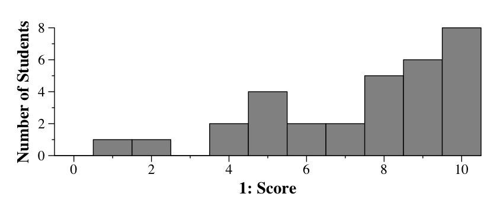
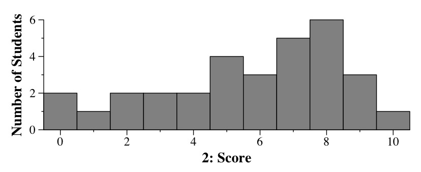
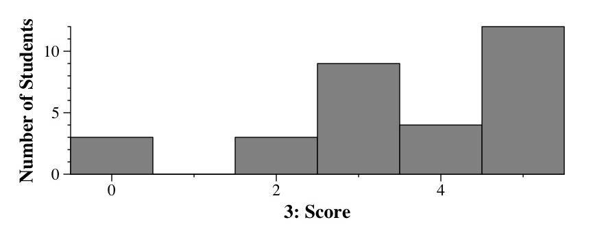
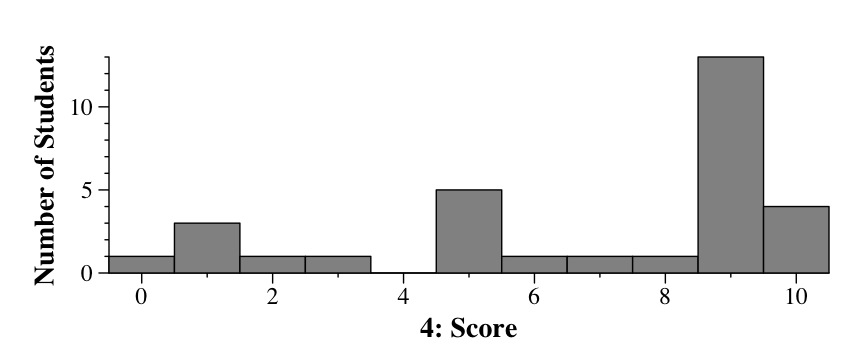

Argv[1] is "Curious-George". The first thing I'd do is put each letter over its array index:
| C 0 |
u 1 |
r 2 |
i 3 |
o 4 |
u 5 |
s 6 |
- 7 |
G 8 |
e 9 |
o 10 |
r 11 |
g 12 |
e 13 |
Ok, now s and argv[1] are the same: 0xbfffedd8. V will be a pointer to the first occurrence of 'G', which is 8 characters past s: 0xbfffede0. That 'G' is turned into a 'g', and then we move v forward 5 characters to 0xbfffede5, which is a pointer to the final 'e'. That gets changed to an 'i'.
Since u was created with strdup(), it has a copy of "Curious-George", which is unaffected by v. The strstr() statement will return a pointer to the "ge" in u, which starts at the 12th character from the beginning of u. Thus, the strstr() returns 0x3000fc.
Here's the output:
UNIX> pex Curious-George Prince-George Eddie-George 0xbfffedd8 0x3000f0 argc: 4 argv[1]: 0xbfffedd8 Curious-georgi s: 0xbfffedd8 Curious-georgi u: 0x3000f0 Curious-George v: 0xbfffede5 i strstr: 0x3000fc ge |
Part 2: One problem is that argc is not checked -- if you call pex will no arguments, the strchr() statement will probably generate a seg fault or bus error.
The second problem is if argv[1] contains a 'G' within five characters of the end of the string -- then the "*v = 'i'; statement will stomp over memory that is not part of the string.
Histogram of scores for Question 1 |
List *new_list()
{
List *l;
l = (List *) malloc(sizeof(List));
if (l == NULL) { perror("malloc"); exit(1); }
l->front = NULL;
l->back = NULL;
l->size = 0;
return l;
}
void list_prepend(List *l, Jval v)
{
Node *n;
n = (Node *) malloc(sizeof(Node));
if (n == NULL) { perror("malloc"); exit(1); }
n->val = v;
n->link = l->front;
l->front = n->link;
l->size++;
if (l->size == 1) l->back = n;
}
void free_list(List *l)
{
Node *n, *n2;
n = l->front;
while (n != NULL) {
n2 = n;
n = n->link;
free(n2);
}
free(l);
}
|
Histogram of scores for Question 2 |
I was pretty flexible on where I took off points here -- as with free_list(), I basically took off enough points so that your score reflected how good your answer was, and tried to take them off in the parts that showed where your answer was lacking.
Histogram of scores for Question 3 |
This is a straightforward program. It reads from standard input until it reads a blank line or EOF, at which point it exits. For all the non-blank lines that it reads, it pushes the characters of the first word onto a stack, onto a queue, and to the beginning and end of a linked list. This means that when we pop the characters off the stack, we will get them in reverse order. When we dequeue them, we will get them in the proper order. And if we look at the list, it will contain the characters in reverse order followed by the characters in their proper order.
So, on the first line of standard input, the queue will hold '1', the stack will hold '1' and the list will hold '1','1'. The first line of output will be "1111".
On the second line of standard input, we will have:
|
q: F, r, e, d s: d, e, r, F l: d, e, r, F, F, r, e, d |
Therefore, line two of output is:
Fdde rerF erFr dFedOn the third line of standard input, we will have:
|
q: E, d, d, i, e s: e, i, d, d, E l: e, i, d, d, E, E, d, d, i, e |
Therefore, line three of output is:
Eeei didd ddEE iddd eEieThe program will exit on line 4.
Therefore the output is:
1111 Fdde rerF erFr dFed Eeei didd ddEE iddd eEie |
The problem came when you got caught on the fact that the program is putting characters on the various data structures, and not whole words. That led to the worst scores, but of course, that shows that you're making a fundamental mistake, as opposed to, for example, writing five lines of output rather than three, which is simply a missed detail.
Histogram of scores for Question 4 |